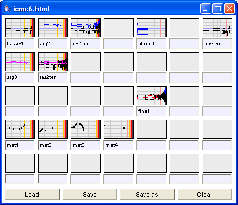

The document window allows to keep musical objects during the work and to possibly save/load them. Elody documents are saved in HTML format. It means that Elody musical objects can be visualized in a browser like for example Mozilla Firefox. The .html extension must be explicitly set so that Elody can later find and load the files. Musical objects can be named. To delete an object in a box, you just have to drag the content of an empty box on the object you want to delete.